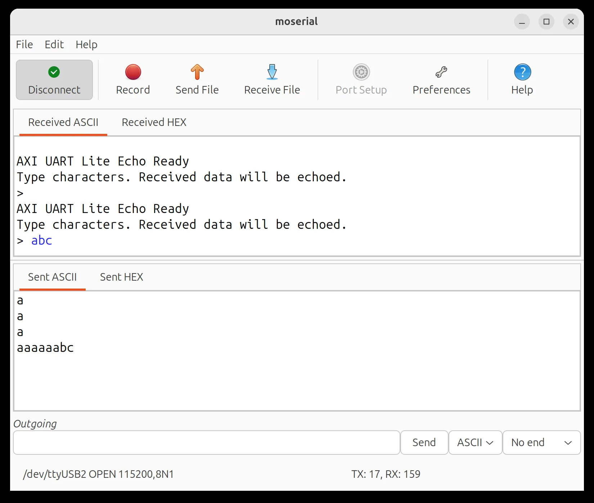

00이 장의 개요
07장에서 성공한 main.c를 한 줄씩 풀어 읽는다. C 코드가 CPU에서 무슨 일을 시키는지, 메모리와 AXI UART Lite의 어느 부분을 움직이는지 연결한다.
- C 코드 해석
- UART 115200 8N1
- 포인터
- FIFO
- Polling Echo
원본: part01/legacy/pages/soc/07_1_uart_echo_c_code_guide.html (이관 원본 보존본)
07장과 07.1장의 차이
새 프로젝트를 만들지 않습니다. ~/soc/sw/soc07_axi_uartlite/src/main.c와 GitHub 원본 코드를 읽는 보조 학습입니다.
프로그램이 하는 일 — PC에서 보낸 문자를 돌려준다
PC에서 a를 보내면 Basys3는 a를 받아 다시 a를 전송합니다. C 프로그램은 그 가운데에서 한 바이트를 읽고 같은 한 바이트를 쓰는 일을 담당합니다.
UART Lite는 직렬 비트 신호를 만드는 전용 하드웨어이고, MicroBlaze V는 그 하드웨어의 저장 공간을 읽고 쓰는 CPU입니다. CPU가 직접 UART 비트의 높고 낮음을 일일이 만들지 않습니다.
| 대상 | 담당하는 일 |
|---|---|
| PC 터미널 | 문자 입력과 결과 화면 표시 |
| RX FIFO(수신 버퍼) | 직렬로 도착한 바이트를 보관 |
| MicroBlaze V CPU | 받은 바이트를 읽고 다시 송신하도록 명령 |
| TX FIFO(송신 버퍼) | 보낼 바이트를 보관하여 직렬 신호로 내보냄 |
핵심 확인 Echo(에코, 받은 문자를 그대로 반환하는 동작)는 UART 하드웨어와 CPU의 협업으로 이루어집니다.
세 개의 헤더 파일 — 이미 준비된 도구를 가져온다
#include "xparameters.h"
#include "xuartlite_l.h"
#include "xil_types.h"| 파일 | 쉬운 설명 | 실제로 쓰는 대상 |
|---|---|---|
xparameters.h | Vivado 설계에서 생성된 하드웨어 주소표 | XPAR_XUARTLITE_0_BASEADDR |
xuartlite_l.h | UART Lite 레지스터를 사용하기 위한 저수준 도구 | SendByte, RecvByte, WriteReg |
xil_types.h | AMD 임베디드 코드의 기본 정수형 | u8, u32 |
#include는 지정한 헤더의 선언과 매크로를 컴파일 전에 사용할 수 있게 하는 명령입니다. 즉, UART 하드웨어 주소와 함수를 매번 직접 작성하지 않아도 됩니다.
핵심 확인 헤더 파일은 07장 Platform Build 후 생성·제공됩니다. 컴파일이 정상이라면 헤더 내용을 직접 고치지 않습니다.
UART 주소를 선택한다 — CPU가 어느 장치에 접근할까?
#ifndef SDT
#define UARTLITE_BASEADDR XPAR_UARTLITE_0_BASEADDR
#else
#define UARTLITE_BASEADDR XPAR_XUARTLITE_0_BASEADDR
#endif이번 07장의 xparameters.h와 Vivado Address Editor에서 확인한 UART Lite 시작 주소는 0x40600000입니다.
0x40600000UART Lite가 배치된 시작 주소
+0x00, +0x04 등내부 레지스터 구분값
어느 UART 레지스터인지 결정
이 부분은 프로그램 실행 중에 검사하는 if가 아니라 컴파일 전에 사용할 주소 이름을 선택하는 전처리기 조건입니다. SDT 정의 여부에 따라 이름이 다른 두 매크로 중 하나를 선택합니다. 둘 다 같은 하드웨어를 가리키도록 플랫폼이 구성되어야 합니다.
| 컴파일 조건 | 선택되는 기호 |
|---|---|
SDT가 정의되지 않은 경우 | XPAR_UARTLITE_0_BASEADDR |
SDT가 정의된 경우 | XPAR_XUARTLITE_0_BASEADDR |
실제 헤더 화면에서는 XPAR_XUARTLITE_0_BASEADDR의 값 0x40600000이 확인됐습니다. 현재 프로젝트에서 어느 분기가 선택됐는지는 실제 빌드 설정으로 판단합니다. 원본 코드는 그대로 유지합니다.
핵심 확인 MicroBlaze V는 주소를 통해 UART Lite에 접근하며, 04장의 Local BRAM 주소와는 다른 영역입니다.
변수 세 개 — 받은 문자와 횟수를 기억한다
volatile u8 last_rx = 0U;
volatile u32 rx_count = 0U;
volatile u32 tx_count = 0U;| 변수 | 처음 값 | 예시 · 문자 a를 수신했다면 |
|---|---|---|
last_rx | 0x00 | 0x61 (ASCII 코드) |
rx_count | 0 | 기존 값에서 1 증가 |
tx_count | 0 | UART로 기록할 때마다 1 증가 |
u8은 8비트 부호 없는 정수입니다. volatile은 컴파일러가 이 변수의 메모리 읽기·쓰기를 임의로 생략하지 않도록 합니다. 0U는 부호 없는 정수 0입니다. Vitis Watch(변숫값 관찰 창)에서도 유용합니다.
u32는 32비트 부호 없는 정수입니다. 여기서 volatile은 인터럽트 처리나 병렬 접근을 안전하게 만드는 장치가 아닙니다.
핵심 확인 문자 한 개의 내용은 last_rx, 누적된 횟수는 rx_count와 tx_count에 따로 기록됩니다.
uart_puts() — 문자열을 한 글자씩 전송한다
static void uart_puts(const char *text)
{
while (*text != '\0') {
XUartLite_SendByte(UARTLITE_BASEADDR, (u8)*text);
tx_count++;
text++;
}
}uart_puts("ABC");를 가정하면 문자열 A, B, C를 차례대로 UART로 보내고, 문자열 끝 \0에서는 반복을 종료합니다.
| 실제 코드 | 컴퓨터가 하는 일 |
|---|---|
const char *text | 문자열 첫 글자 위치(주소)를 넘겨받습니다. const는 이 포인터를 통해 문자열을 변경하지 않는다는 의미입니다. |
while (*text != '\0') | 현재 글자가 문자열의 끝이 아니면 반복합니다. |
SendByte(..., (u8)*text) | 현재 글자의 1바이트 값을 TX FIFO로 보냅니다. |
tx_count++ | UART에 기록한 바이트 수를 1 증가시킵니다. |
text++ | 포인터를 다음 글자 주소로 이동시킵니다. |
*text는 text가 가리키는 주소에 있는 현재 문자 읽기이고, text++는 다음 문자로 이동입니다. 문자 A를 보낼 때 \0까지 함께 송신하는 것은 아닙니다.
XUartLite_SendByte()는 TX FIFO가 기록 가능한 상태가 될 때까지 기다릴 수 있습니다. 함수가 돌아왔다는 사실과 UART 직렬선에서 마지막 비트까지 모두 전송됐다는 사실은 구분해야 합니다.
핵심 확인 문자열 전체를 한 번에 보내는 것처럼 보여도 실제 함수 안에서는 1바이트씩 UART에 기록합니다.
main() 시작 — UART RX/TX FIFO를 비운다
/*
* CTRL_REG bit1 = RX FIFO reset
* CTRL_REG bit0 = TX FIFO reset
* 0x03 : 두 FIFO를 모두 비운다.
* Interrupt bit4는 0이므로 Polling 방식이다.
*/
XUartLite_WriteReg(
UARTLITE_BASEADDR,
XUL_CONTROL_REG_OFFSET,
0x03U
);main()은 프로그램이 시작되는 함수입니다. 맨 처음 UART Lite 내부에 남았을 수 있는 송신·수신 데이터를 초기화합니다.
| Offset | 레지스터 | 주요 용도 |
|---|---|---|
+0x00 | RX FIFO | 받은 바이트 읽기 |
+0x04 | TX FIFO | 보낼 바이트 쓰기 |
+0x08 | Status Register | 수신 있음·송신 가득 참 확인 |
+0x0C | Control Register | FIFO 초기화·인터럽트 제어 |
첫 번째는 UART의 시작 주소, 두 번째는 내부 레지스터 위치, 세 번째는 실제로 기록할 값입니다. 결국 CPU가 AXI4-Lite를 통해 UART 제어 레지스터에 0x03을 쓰게 됩니다.
핵심 확인 여기서는 UART FIFO만 초기화합니다. FPGA 전체를 다시 설계하거나 CPU 메모리를 지우는 동작이 아닙니다.
시작 안내문 — PC에 글자를 출력한다
uart_puts("\r\nAXI UART Lite Echo Ready\r\n");
uart_puts("Type characters. Received data will be echoed.\r\n> ");\r은 커서를 줄의 시작으로 옮기는 문자, \n은 다음 줄로 내리는 문자입니다. 화면의 줄바꿈도 UART로 보내는 1바이트 문자들이 조합된 결과입니다.
| 출력 대상 | 문자 수 |
|---|---|
첫 번째 안내문 (앞뒤 \r\n 포함) | 28바이트 |
두 번째 안내문 (뒤 \r\n> 포함) | 50바이트 |
| 안내문 합계 | 78바이트 |
Echo 문자를 아직 받지 않았더라도 이 두 개의 안내문을 전송하면서 tx_count가 증가합니다. 안내문 송신 함수들이 모두 반환된 시점의 예상값은 78입니다. 실제 Watch 관찰값과 구별합니다.
핵심 확인 터미널에서 안내문이 보이는 것은 FPGA → PC의 UART TX 경로가 동작한다는 증거입니다.
RecvByte() — 문자가 들어올 때까지 기다린다
while (1) {
/* RX FIFO에 문자가 들어올 때까지 Blocking 대기 */
last_rx = XUartLite_RecvByte(UARTLITE_BASEADDR);
rx_count++;RecvByte()가 한 바이트를 읽고 last_rx에 저장합니다.XUartLite_RecvByte()는 데이터가 들어오기 전까지 반환하지 않습니다. CPU는 다른 작업을 하지 않고 UART의 수신 가능 상태를 확인합니다. 07장은 가장 단순한 문자 Echo 동작을 이해하기 위한 구조입니다.
이 줄이 끝나면 rx_count++가 실행되어 수신한 바이트 수를 1 증가시킵니다.
핵심 확인 PC가 아무 문자도 보내지 않으면 RecvByte()에서 계속 기다리는 것이 정상입니다.
SendByte() — 받은 글자를 그대로 돌려준다
/* 받은 1 Byte를 그대로 PC로 다시 전송 */
XUartLite_SendByte(UARTLITE_BASEADDR, last_rx);
tx_count++;수신 데이터에 더하거나 빼는 계산을 전혀 하지 않습니다. last_rx에 저장된 바이트 값을 SendByte()에 그대로 전달하기 때문에 Echo가 됩니다.
tx_count++는 TX FIFO로 데이터를 쓰도록 요청한 횟수를 기록합니다. UART 케이블의 물리적인 비트 전송 완료 횟수를 측정한 것은 아닙니다.
핵심 확인 수신은 RX FIFO 읽기, 송신은 TX FIFO 쓰기입니다. CPU는 AXI4-Lite 레지스터를 통해 두 동작을 수행합니다.
실제 Basys3 결과 — abc를 보내면 abc가 돌아온다
07장 실습에서 moserial은 /dev/ttyUSB2에 115200 8N1로 연결됐고, PC에서 전송한 abc가 수신 창에 그대로 표시됐습니다.

abc 반환 확인. 이미지를 클릭하면 원본 크기로 열립니다.Received ASCII에 abc가 반환된 것을 확인했습니다. 아래 횟수는 이 코드에서 계산한 예상값이지 Debug Watch로 확인한 실측값은 아닙니다.| 상태 | last_rx | rx_count | tx_count |
|---|---|---|---|
| 안내문 두 개 출력 후 | 0x00 | 0 | 78 |
a Echo 처리 후 | 0x61 | 1 | 79 |
b Echo 처리 후 | 0x62 | 2 | 80 |
c Echo 처리 후 | 0x63 | 3 | 81 |
위 표는 프로그램 시작 이후 추가 입력이 abc뿐이며, 중간에 다시 실행하거나 종료 문자를 전송하지 않았다고 가정한 계산입니다. moserial 화면에 보이는 누적 TX/RX 바이트와 C 변수값은 서로 다른 항목입니다.
핵심 확인 실제 검증된 것은 UART 양방향 문자 Echo이고, 세 변수의 정확한 Watch 관찰값은 별도 확인 항목입니다.
디버그로 확인 — 무엇을 관찰하면 될까?
Vitis Debugger(디버거, 프로그램 실행과 변수를 관찰하는 도구)의 Watch에 아래 세 변수를 등록하면 흐름을 쉽게 볼 수 있습니다.
| 표현식 | 확인할 내용 |
|---|---|
last_rx | 마지막 문자의 ASCII 값 |
rx_count | 받은 바이트 수 |
tx_count | 안내문까지 포함한 UART 송신 함수 기록 수 |
실제 성공한 실행 순서
Vitis 상단
launch.json탭을 열어 07장 ELF와 Bitstream을 확인 → Debug 실행 → 일시 정지 상태면 Continue(F5)를 실행합니다.Watch에 변수 추가
last_rx,rx_count,tx_count를 등록하고, 문자 전송 후 프로그램을 일시 정지해 값을 확인합니다.관찰한 값과 예상값 비교
abc만 보냈다면 마지막 문자는c이므로last_rx는0x63으로 예상됩니다. 실제 수신 문자 수와 다시 실행한 횟수에 따라 카운터는 달라질 수 있습니다.
① text++는 왜 필요한가? ② 문자가 오지 않으면 CPU는 어느 함수에서 멈춰 있는가? ③ 처음부터 tx_count가 증가하는 이유는 무엇인가? ④ RX/TX FIFO는 CPU의 Local BRAM과 같은 곳인가?
launch.json 탭을 먼저 여는 순서는 이번 Vivado/Vitis 2024.2 환경에서 성공한 절차입니다. 그 탭을 여는 것 자체가 문제 해결의 원인이라는 결론은 아닙니다.
핵심 확인 디버그로 멈춰 있는 동안에는 UART 수신 반복문이 진행하지 않으므로 Echo가 지연될 수 있습니다.
검증된 main.c 전체 원본
아래는 GitHub code/soc07/main.c의 원본과 동일한 C 코드입니다. 이번 07.1장은 설명을 추가한 자료일 뿐 하드웨어 설정이나 실행 코드를 바꾸지 않습니다.
#include "xparameters.h"
#include "xuartlite_l.h"
#include "xil_types.h"
/*
* SoC 07 - AXI UART Lite Polling Echo
*
* Hardware setting:
* Baud Rate : 115200
* Data Bits : 8
* Parity : None
* Stop Bit : 1
*
* PC terminal:
* 115200 8N1
* Flow control : None
* Local echo : Off
*/
#ifndef SDT
#define UARTLITE_BASEADDR XPAR_UARTLITE_0_BASEADDR
#else
#define UARTLITE_BASEADDR XPAR_XUARTLITE_0_BASEADDR
#endif
volatile u8 last_rx = 0U;
volatile u32 rx_count = 0U;
volatile u32 tx_count = 0U;
static void uart_puts(const char *text)
{
while (*text != '\0') {
XUartLite_SendByte(UARTLITE_BASEADDR, (u8)*text);
tx_count++;
text++;
}
}
int main(void)
{
/*
* CTRL_REG bit1 = RX FIFO reset
* CTRL_REG bit0 = TX FIFO reset
* 0x03 : 두 FIFO를 모두 비운다.
* Interrupt bit4는 0이므로 Polling 방식이다.
*/
XUartLite_WriteReg(
UARTLITE_BASEADDR,
XUL_CONTROL_REG_OFFSET,
0x03U
);
uart_puts("\r\nAXI UART Lite Echo Ready\r\n");
uart_puts("Type characters. Received data will be echoed.\r\n> ");
while (1) {
/* RX FIFO에 문자가 들어올 때까지 Blocking 대기 */
last_rx = XUartLite_RecvByte(UARTLITE_BASEADDR);
rx_count++;
/* 받은 1 Byte를 그대로 PC로 다시 전송 */
XUartLite_SendByte(UARTLITE_BASEADDR, last_rx);
tx_count++;
}
return 0;
}07장 Vivado/Vitis 따라하기로 돌아가기 · GitHub 실제 소스 열기 · AMD AXI UART Lite Product Guide PG142
핵심 확인 C 코드를 이해했다면 07장을 다시 구성할 필요 없이 08장 AXI Timer로 이어갈 수 있습니다.